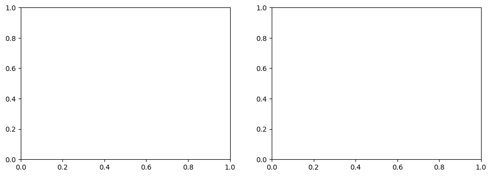
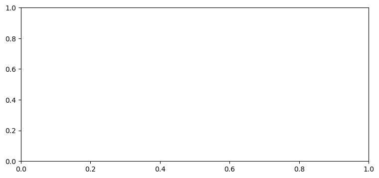
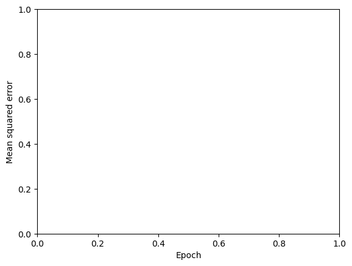
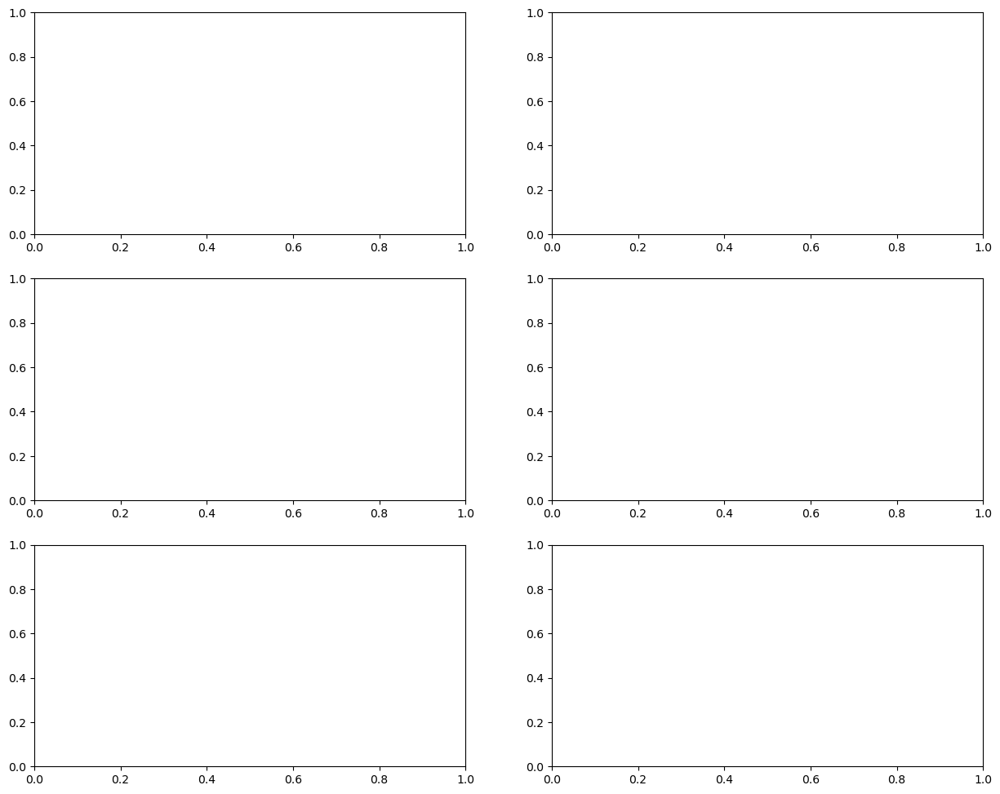

Tutorial on Global Temperature Trends with Deep Learning#
Predicting global temperature from greenhouse gas concentrations#
Here we will look at an example of using a neural network to predict the global temperature given the global atmospheric concentrations of CO2 and CH4. This is based on this notebook developed by Weiwei Zhan.
import os
import numpy as np
import pandas as pd
import matplotlib.pyplot as plt
import xarray as xr
from glob import glob
import tensorflow as tf
from tensorflow import keras
from tensorflow.keras.models import Model, load_model
from tensorflow.keras.layers import *
from tensorflow.keras import Sequential
---------------------------------------------------------------------------
ModuleNotFoundError Traceback (most recent call last)
Cell In[1], line 8
5 import xarray as xr
6 from glob import glob
----> 8 import tensorflow as tf
9 from tensorflow import keras
10 from tensorflow.keras.models import Model, load_model
ModuleNotFoundError: No module named 'tensorflow'
cwd = os.getcwd()
train_path = "gs://leap-persistent/jbusecke/data/climatebench/train_val/"
test_path = "gs://leap-persistent/jbusecke/data/climatebench/test/"
Visualization of the ClimateBench Data#
ClimateBench is a spatial-temporal dataset that contains simulations generated by the NorESM2 climate model. It provides both historical simulations & future projections under different scenarios (e.g., ssp245).
Four future scenarios are plotted here: ssp126, ssp245, ssp370, ssp585. These scenarios make different assumptions about future anthropogenic emissions.
def open_dataset(file_path):
"""Flexible opener that can handle both local files (legacy) and cloud urls. IMPORTANT: For this to work the `file_path` must be provided without extension."""
if 'gs://' in file_path:
store = f"{file_path}.zarr"
ds = xr.open_dataset(store, engine='zarr')
else:
ds = xr.open_dataset(f"{file_path}.nc")
# add information to sort and label etc
ds.attrs['file_name']
return ds
scenarios = ['historical','ssp126','ssp370','ssp585']
inputs = [os.path.join(train_path , f"inputs_{scenario}") for scenario in scenarios]
inputs.append(os.path.join(test_path, "inputs_ssp245"))
inputs.sort(key=lambda x:x.split('_')[-1])
outputs = [os.path.join(train_path , f"outputs_{scenario}") for scenario in scenarios]
outputs.append(os.path.join(test_path, "outputs_ssp245"))
outputs.sort(key=lambda x:x.split('_')[-1])
fig, axes = plt.subplots(1, 2, figsize=(12,4))
colors = ['tab:blue','tab:green','tab:purple','tab:orange','tab:red']
for i,input in enumerate(inputs):
label=input.split('_')[-1]#[:-3]
X = open_dataset(input)
x = X.time.data
X['CO2'].plot(label=label,color=colors[i],linewidth=2,ax=axes[0])
axes[0].set_ylabel("Cumulative anthropogenic CO2 \nemissions since 1850 (GtCO2)")
X['CH4'].plot(label=label,color=colors[i],linewidth=2,ax=axes[1])
axes[1].set_ylabel("Anthropogenic CH4 \nemissions (GtCH4 / year)")
axes[0].set_title('CO2')
axes[1].set_title('CH4')
axes[0].legend()
plt.tight_layout()
---------------------------------------------------------------------------
ValueError Traceback (most recent call last)
Cell In[5], line 8
5 for i,input in enumerate(inputs):
7 label=input.split('_')[-1]#[:-3]
----> 8 X = open_dataset(input)
9 x = X.time.data
11 X['CO2'].plot(label=label,color=colors[i],linewidth=2,ax=axes[0])
Cell In[3], line 5, in open_dataset(file_path)
3 if 'gs://' in file_path:
4 store = f"{file_path}.zarr"
----> 5 ds = xr.open_dataset(store, engine='zarr')
6 else:
7 ds = xr.open_dataset(f"{file_path}.nc")
File /opt/anaconda3/envs/ML4Climate2025/lib/python3.8/site-packages/xarray/backends/api.py:525, in open_dataset(filename_or_obj, engine, chunks, cache, decode_cf, mask_and_scale, decode_times, decode_timedelta, use_cftime, concat_characters, decode_coords, drop_variables, inline_array, backend_kwargs, **kwargs)
522 if engine is None:
523 engine = plugins.guess_engine(filename_or_obj)
--> 525 backend = plugins.get_backend(engine)
527 decoders = _resolve_decoders_kwargs(
528 decode_cf,
529 open_backend_dataset_parameters=backend.open_dataset_parameters,
(...)
535 decode_coords=decode_coords,
536 )
538 overwrite_encoded_chunks = kwargs.pop("overwrite_encoded_chunks", None)
File /opt/anaconda3/envs/ML4Climate2025/lib/python3.8/site-packages/xarray/backends/plugins.py:185, in get_backend(engine)
183 engines = list_engines()
184 if engine not in engines:
--> 185 raise ValueError(
186 f"unrecognized engine {engine} must be one of: {list(engines)}"
187 )
188 backend = engines[engine]
189 elif isinstance(engine, type) and issubclass(engine, BackendEntrypoint):
ValueError: unrecognized engine zarr must be one of: ['netcdf4', 'scipy', 'store']

fig, ax = plt.subplots(1, 1, figsize=(9,4))
for i,output in enumerate(outputs):
label=output.split('_')[-1]#[:-3]
X = open_dataset(output).mean(dim="member")[['tas']].drop_vars(['quantile'])
x = X.time.data
weights = np.cos(np.deg2rad(X.lat))
tas_mean = X['tas'].weighted(weights).mean(['lat', 'lon']).data
tas_std = X['tas'].weighted(weights).std(['lat', 'lon']).data
ax.plot(x, tas_mean, label=label,color=colors[i],linewidth=2)
ax.fill_between(x,tas_mean+tas_std,tas_mean-tas_std,facecolor=colors[i],alpha=0.2)
ax.set_ylabel("Global average temperature\n since 1850 (°C)")
ax.legend()
plt.tight_layout()
---------------------------------------------------------------------------
ValueError Traceback (most recent call last)
Cell In[6], line 6
3 for i,output in enumerate(outputs):
5 label=output.split('_')[-1]#[:-3]
----> 6 X = open_dataset(output).mean(dim="member")[['tas']].drop_vars(['quantile'])
7 x = X.time.data
9 weights = np.cos(np.deg2rad(X.lat))
Cell In[3], line 5, in open_dataset(file_path)
3 if 'gs://' in file_path:
4 store = f"{file_path}.zarr"
----> 5 ds = xr.open_dataset(store, engine='zarr')
6 else:
7 ds = xr.open_dataset(f"{file_path}.nc")
File /opt/anaconda3/envs/ML4Climate2025/lib/python3.8/site-packages/xarray/backends/api.py:525, in open_dataset(filename_or_obj, engine, chunks, cache, decode_cf, mask_and_scale, decode_times, decode_timedelta, use_cftime, concat_characters, decode_coords, drop_variables, inline_array, backend_kwargs, **kwargs)
522 if engine is None:
523 engine = plugins.guess_engine(filename_or_obj)
--> 525 backend = plugins.get_backend(engine)
527 decoders = _resolve_decoders_kwargs(
528 decode_cf,
529 open_backend_dataset_parameters=backend.open_dataset_parameters,
(...)
535 decode_coords=decode_coords,
536 )
538 overwrite_encoded_chunks = kwargs.pop("overwrite_encoded_chunks", None)
File /opt/anaconda3/envs/ML4Climate2025/lib/python3.8/site-packages/xarray/backends/plugins.py:185, in get_backend(engine)
183 engines = list_engines()
184 if engine not in engines:
--> 185 raise ValueError(
186 f"unrecognized engine {engine} must be one of: {list(engines)}"
187 )
188 backend = engines[engine]
189 elif isinstance(engine, type) and issubclass(engine, BackendEntrypoint):
ValueError: unrecognized engine zarr must be one of: ['netcdf4', 'scipy', 'store']

y_his = open_dataset(os.path.join(train_path , "outputs_historical")).mean(dim="member")[['tas']].drop_vars(['quantile'])
y_ssp370 = open_dataset(os.path.join(train_path,'outputs_ssp370')).mean(dim="member")[['tas']].drop_vars(['quantile'])
fig,axes = plt.subplots(figsize=(18,4.5),ncols=3)
yr0, yr1, yr2 = 1900, 1950, 2000
vmin, vmax = -5, 5
y_his.sel(time=yr0).tas.plot(ax=axes.flat[0],vmin=vmin,vmax=vmax,cmap='RdBu_r')
y_his.sel(time=yr1).tas.plot(ax=axes.flat[1],vmin=vmin,vmax=vmax,cmap='RdBu_r')
y_his.sel(time=yr2).tas.plot(ax=axes.flat[2],vmin=vmin,vmax=vmax,cmap='RdBu_r')
fig.suptitle('historical simulations for temperature',fontweight='bold')
plt.tight_layout()
---------------------------------------------------------------------------
ValueError Traceback (most recent call last)
Cell In[7], line 1
----> 1 y_his = open_dataset(os.path.join(train_path , "outputs_historical")).mean(dim="member")[['tas']].drop_vars(['quantile'])
2 y_ssp370 = open_dataset(os.path.join(train_path,'outputs_ssp370')).mean(dim="member")[['tas']].drop_vars(['quantile'])
4 fig,axes = plt.subplots(figsize=(18,4.5),ncols=3)
Cell In[3], line 5, in open_dataset(file_path)
3 if 'gs://' in file_path:
4 store = f"{file_path}.zarr"
----> 5 ds = xr.open_dataset(store, engine='zarr')
6 else:
7 ds = xr.open_dataset(f"{file_path}.nc")
File /opt/anaconda3/envs/ML4Climate2025/lib/python3.8/site-packages/xarray/backends/api.py:525, in open_dataset(filename_or_obj, engine, chunks, cache, decode_cf, mask_and_scale, decode_times, decode_timedelta, use_cftime, concat_characters, decode_coords, drop_variables, inline_array, backend_kwargs, **kwargs)
522 if engine is None:
523 engine = plugins.guess_engine(filename_or_obj)
--> 525 backend = plugins.get_backend(engine)
527 decoders = _resolve_decoders_kwargs(
528 decode_cf,
529 open_backend_dataset_parameters=backend.open_dataset_parameters,
(...)
535 decode_coords=decode_coords,
536 )
538 overwrite_encoded_chunks = kwargs.pop("overwrite_encoded_chunks", None)
File /opt/anaconda3/envs/ML4Climate2025/lib/python3.8/site-packages/xarray/backends/plugins.py:185, in get_backend(engine)
183 engines = list_engines()
184 if engine not in engines:
--> 185 raise ValueError(
186 f"unrecognized engine {engine} must be one of: {list(engines)}"
187 )
188 backend = engines[engine]
189 elif isinstance(engine, type) and issubclass(engine, BackendEntrypoint):
ValueError: unrecognized engine zarr must be one of: ['netcdf4', 'scipy', 'store']
y_ssp370 = open_dataset(os.path.join(train_path,'outputs_ssp370')).mean(dim="member")[['tas']].drop_vars(['quantile'])
fig,axes = plt.subplots(figsize=(18,4.5),ncols=3)
yr0, yr1, yr2 = 2020, 2050, 2100
vmin, vmax = -5, 5
y_ssp370.sel(time=yr0).tas.plot(ax=axes.flat[0],vmin=vmin,vmax=vmax,cmap='RdBu_r')
y_ssp370.sel(time=yr1).tas.plot(ax=axes.flat[1],vmin=vmin,vmax=vmax,cmap='RdBu_r')
y_ssp370.sel(time=yr2).tas.plot(ax=axes.flat[2],vmin=vmin,vmax=vmax,cmap='RdBu_r')
fig.suptitle('future simulations (ssp370) for temperature',fontweight='bold')
plt.tight_layout()
---------------------------------------------------------------------------
ValueError Traceback (most recent call last)
Cell In[8], line 1
----> 1 y_ssp370 = open_dataset(os.path.join(train_path,'outputs_ssp370')).mean(dim="member")[['tas']].drop_vars(['quantile'])
4 fig,axes = plt.subplots(figsize=(18,4.5),ncols=3)
5 yr0, yr1, yr2 = 2020, 2050, 2100
Cell In[3], line 5, in open_dataset(file_path)
3 if 'gs://' in file_path:
4 store = f"{file_path}.zarr"
----> 5 ds = xr.open_dataset(store, engine='zarr')
6 else:
7 ds = xr.open_dataset(f"{file_path}.nc")
File /opt/anaconda3/envs/ML4Climate2025/lib/python3.8/site-packages/xarray/backends/api.py:525, in open_dataset(filename_or_obj, engine, chunks, cache, decode_cf, mask_and_scale, decode_times, decode_timedelta, use_cftime, concat_characters, decode_coords, drop_variables, inline_array, backend_kwargs, **kwargs)
522 if engine is None:
523 engine = plugins.guess_engine(filename_or_obj)
--> 525 backend = plugins.get_backend(engine)
527 decoders = _resolve_decoders_kwargs(
528 decode_cf,
529 open_backend_dataset_parameters=backend.open_dataset_parameters,
(...)
535 decode_coords=decode_coords,
536 )
538 overwrite_encoded_chunks = kwargs.pop("overwrite_encoded_chunks", None)
File /opt/anaconda3/envs/ML4Climate2025/lib/python3.8/site-packages/xarray/backends/plugins.py:185, in get_backend(engine)
183 engines = list_engines()
184 if engine not in engines:
--> 185 raise ValueError(
186 f"unrecognized engine {engine} must be one of: {list(engines)}"
187 )
188 backend = engines[engine]
189 elif isinstance(engine, type) and issubclass(engine, BackendEntrypoint):
ValueError: unrecognized engine zarr must be one of: ['netcdf4', 'scipy', 'store']
y_ssp370 = open_dataset(os.path.join(train_path,'outputs_ssp370')).mean(dim="member")[['tas']].drop_vars(['quantile'])
fig,axes = plt.subplots(figsize=(18,4.5),ncols=3)
yr0, yr1, yr2 = 2020, 2050, 2100
vmin, vmax = -5, 5
y_ssp370.sel(time=yr0).tas.plot(ax=axes.flat[0],vmin=vmin,vmax=vmax,cmap='RdBu_r')
y_ssp370.sel(time=yr1).tas.plot(ax=axes.flat[1],vmin=vmin,vmax=vmax,cmap='RdBu_r')
y_ssp370.sel(time=yr2).tas.plot(ax=axes.flat[2],vmin=vmin,vmax=vmax,cmap='RdBu_r')
fig.suptitle('future simulations (ssp370) for temperature',fontweight='bold')
plt.tight_layout()
---------------------------------------------------------------------------
ValueError Traceback (most recent call last)
Cell In[9], line 1
----> 1 y_ssp370 = open_dataset(os.path.join(train_path,'outputs_ssp370')).mean(dim="member")[['tas']].drop_vars(['quantile'])
4 fig,axes = plt.subplots(figsize=(18,4.5),ncols=3)
5 yr0, yr1, yr2 = 2020, 2050, 2100
Cell In[3], line 5, in open_dataset(file_path)
3 if 'gs://' in file_path:
4 store = f"{file_path}.zarr"
----> 5 ds = xr.open_dataset(store, engine='zarr')
6 else:
7 ds = xr.open_dataset(f"{file_path}.nc")
File /opt/anaconda3/envs/ML4Climate2025/lib/python3.8/site-packages/xarray/backends/api.py:525, in open_dataset(filename_or_obj, engine, chunks, cache, decode_cf, mask_and_scale, decode_times, decode_timedelta, use_cftime, concat_characters, decode_coords, drop_variables, inline_array, backend_kwargs, **kwargs)
522 if engine is None:
523 engine = plugins.guess_engine(filename_or_obj)
--> 525 backend = plugins.get_backend(engine)
527 decoders = _resolve_decoders_kwargs(
528 decode_cf,
529 open_backend_dataset_parameters=backend.open_dataset_parameters,
(...)
535 decode_coords=decode_coords,
536 )
538 overwrite_encoded_chunks = kwargs.pop("overwrite_encoded_chunks", None)
File /opt/anaconda3/envs/ML4Climate2025/lib/python3.8/site-packages/xarray/backends/plugins.py:185, in get_backend(engine)
183 engines = list_engines()
184 if engine not in engines:
--> 185 raise ValueError(
186 f"unrecognized engine {engine} must be one of: {list(engines)}"
187 )
188 backend = engines[engine]
189 elif isinstance(engine, type) and issubclass(engine, BackendEntrypoint):
ValueError: unrecognized engine zarr must be one of: ['netcdf4', 'scipy', 'store']
Data preprocessing#
We will train the NN using simulations from 3 historical and 3 future scenarios. We will then test the trained NN on the ssp245 scenario.
def prepare_predictor(data_sets, data_path,time_reindex=True):
"""
Args:
data_sets list(str): names of datasets
"""
# Create training and testing arrays
if isinstance(data_sets, str):
data_sets = [data_sets]
X_all = []
length_all = []
for file in data_sets:
data = open_dataset(f"{data_path}inputs_{file}")
X_all.append(data)
length_all.append(len(data.time))
X = xr.concat(X_all,dim='time')
length_all = np.array(length_all)
if time_reindex:
X = X.assign_coords(time=np.arange(len(X.time)))
return X, length_all
def prepare_predictand(data_sets,data_path,time_reindex=True):
if isinstance(data_sets, str):
data_sets = [data_sets]
Y_all = []
length_all = []
for file in data_sets:
data = open_dataset(f"{data_path}outputs_{file}")
Y_all.append(data)
length_all.append(len(data.time))
length_all = np.array(length_all)
Y = xr.concat(Y_all,dim='time').mean('member')
Y = Y.rename({'lon':'longitude','lat': 'latitude'}).transpose('time','latitude', 'longitude').drop_vars(['quantile'])
if time_reindex:
Y = Y.assign_coords(time=np.arange(len(Y.time)))
return Y, length_all
# Training set
train_files = ["historical", "ssp585", "ssp126", "ssp370","hist-aer","hist-GHG"]
X_train_xr, _ = prepare_predictor(train_files,train_path)
y_train_xr, _ = prepare_predictand(train_files,train_path)
# Test set
X_test_xr, _ = prepare_predictor('ssp245', data_path=test_path,time_reindex=False)
y_test_xr, _ = prepare_predictand('ssp245',data_path=test_path,time_reindex=False)
---------------------------------------------------------------------------
ValueError Traceback (most recent call last)
Cell In[11], line 3
1 # Training set
2 train_files = ["historical", "ssp585", "ssp126", "ssp370","hist-aer","hist-GHG"]
----> 3 X_train_xr, _ = prepare_predictor(train_files,train_path)
4 y_train_xr, _ = prepare_predictand(train_files,train_path)
6 # Test set
Cell In[10], line 15, in prepare_predictor(data_sets, data_path, time_reindex)
12 length_all = []
14 for file in data_sets:
---> 15 data = open_dataset(f"{data_path}inputs_{file}")
16 X_all.append(data)
17 length_all.append(len(data.time))
Cell In[3], line 5, in open_dataset(file_path)
3 if 'gs://' in file_path:
4 store = f"{file_path}.zarr"
----> 5 ds = xr.open_dataset(store, engine='zarr')
6 else:
7 ds = xr.open_dataset(f"{file_path}.nc")
File /opt/anaconda3/envs/ML4Climate2025/lib/python3.8/site-packages/xarray/backends/api.py:525, in open_dataset(filename_or_obj, engine, chunks, cache, decode_cf, mask_and_scale, decode_times, decode_timedelta, use_cftime, concat_characters, decode_coords, drop_variables, inline_array, backend_kwargs, **kwargs)
522 if engine is None:
523 engine = plugins.guess_engine(filename_or_obj)
--> 525 backend = plugins.get_backend(engine)
527 decoders = _resolve_decoders_kwargs(
528 decode_cf,
529 open_backend_dataset_parameters=backend.open_dataset_parameters,
(...)
535 decode_coords=decode_coords,
536 )
538 overwrite_encoded_chunks = kwargs.pop("overwrite_encoded_chunks", None)
File /opt/anaconda3/envs/ML4Climate2025/lib/python3.8/site-packages/xarray/backends/plugins.py:185, in get_backend(engine)
183 engines = list_engines()
184 if engine not in engines:
--> 185 raise ValueError(
186 f"unrecognized engine {engine} must be one of: {list(engines)}"
187 )
188 backend = engines[engine]
189 elif isinstance(engine, type) and issubclass(engine, BackendEntrypoint):
ValueError: unrecognized engine zarr must be one of: ['netcdf4', 'scipy', 'store']
X_train_df = pd.DataFrame({"CO2": X_train_xr["CO2"].data,
"CH4": X_train_xr["CH4"].data
}, index=X_train_xr["CO2"].coords['time'].data)
X_test_df = pd.DataFrame({"CO2": X_test_xr["CO2"].data,
"CH4": X_test_xr["CH4"].data
}, index=X_test_xr["CO2"].coords['time'].data)
---------------------------------------------------------------------------
NameError Traceback (most recent call last)
Cell In[12], line 1
----> 1 X_train_df = pd.DataFrame({"CO2": X_train_xr["CO2"].data,
2 "CH4": X_train_xr["CH4"].data
3 }, index=X_train_xr["CO2"].coords['time'].data)
5 X_test_df = pd.DataFrame({"CO2": X_test_xr["CO2"].data,
6 "CH4": X_test_xr["CH4"].data
7 }, index=X_test_xr["CO2"].coords['time'].data)
NameError: name 'X_train_xr' is not defined
y_train_df = y_train_xr["tas"].stack(z=("latitude", "longitude"))
y_train_df = pd.DataFrame(y_train_df.to_pandas())
---------------------------------------------------------------------------
NameError Traceback (most recent call last)
Cell In[13], line 1
----> 1 y_train_df = y_train_xr["tas"].stack(z=("latitude", "longitude"))
2 y_train_df = pd.DataFrame(y_train_df.to_pandas())
NameError: name 'y_train_xr' is not defined
X_train_df.head()
---------------------------------------------------------------------------
NameError Traceback (most recent call last)
Cell In[14], line 1
----> 1 X_train_df.head()
NameError: name 'X_train_df' is not defined
print(len(y_train_df))
y_train_df.head()
---------------------------------------------------------------------------
NameError Traceback (most recent call last)
Cell In[15], line 1
----> 1 print(len(y_train_df))
2 y_train_df.head()
NameError: name 'y_train_df' is not defined
Data normalization#
# Standardization
mean, std = X_train_df.mean(), X_train_df.std()
X_train_df = (X_train_df - mean)/std
X_test_df = (X_test_df - mean)/std
X_train = X_train_df.to_numpy()
y_train = y_train_df.to_numpy()
X_test = X_test_df.to_numpy()
print(X_train.shape,y_train.shape)
---------------------------------------------------------------------------
NameError Traceback (most recent call last)
Cell In[16], line 2
1 # Standardization
----> 2 mean, std = X_train_df.mean(), X_train_df.std()
4 X_train_df = (X_train_df - mean)/std
5 X_test_df = (X_test_df - mean)/std
NameError: name 'X_train_df' is not defined
Define the neural network structure#
Here we will use a neural network that has 3 hidden layers, and each hidden layer has 64 neurons. The input to the neural network will be the CO2 and CH4 concentrations at each time step.
The neural network outputs are the global surface temperatures (tas), with each neuron of the output layer corresponding to each pixel. There are 13824 pixels in total (96 latitude and 144 longitude).
# set hyperparameters
n_neuron = 64
activation = 'relu'
num_epochs = 50
learning_rate = 0.001
minibatch_size = 64
model_num = 1
N_layers = 3 # number of hidden layers
tf.keras.backend.clear_session()
model = tf.keras.Sequential([
tf.keras.Input(shape=(X_train.shape[1],)),
tf.keras.layers.Dense(64, activation="relu",name="hidden_layer_1"),
tf.keras.layers.Dense(64, activation="relu",name="hidden_layer_2"),
tf.keras.layers.Dense(64, activation="relu",name="hidden_layer_3"),
tf.keras.layers.Dense(y_train.shape[1],activation='linear',name="output_layer")
])
---------------------------------------------------------------------------
NameError Traceback (most recent call last)
Cell In[18], line 1
----> 1 tf.keras.backend.clear_session()
2 model = tf.keras.Sequential([
3 tf.keras.Input(shape=(X_train.shape[1],)),
4 tf.keras.layers.Dense(64, activation="relu",name="hidden_layer_1"),
(...)
7 tf.keras.layers.Dense(y_train.shape[1],activation='linear',name="output_layer")
8 ])
NameError: name 'tf' is not defined
model.summary()
---------------------------------------------------------------------------
NameError Traceback (most recent call last)
Cell In[19], line 1
----> 1 model.summary()
NameError: name 'model' is not defined
model.compile(loss='mse',optimizer=tf.keras.optimizers.Adam(learning_rate=learning_rate))
---------------------------------------------------------------------------
NameError Traceback (most recent call last)
Cell In[20], line 1
----> 1 model.compile(loss='mse',optimizer=tf.keras.optimizers.Adam(learning_rate=learning_rate))
NameError: name 'model' is not defined
Train the Neural Network and Save its weights#
early_stop = keras.callbacks.EarlyStopping(monitor='val_loss', patience=20)
history = model.fit(X_train, y_train,
batch_size = minibatch_size,
epochs = num_epochs,
validation_split= 0.2,
verbose = 1,
callbacks = [early_stop])
---------------------------------------------------------------------------
NameError Traceback (most recent call last)
Cell In[21], line 1
----> 1 early_stop = keras.callbacks.EarlyStopping(monitor='val_loss', patience=20)
3 history = model.fit(X_train, y_train,
4 batch_size = minibatch_size,
5 epochs = num_epochs,
6 validation_split= 0.2,
7 verbose = 1,
8 callbacks = [early_stop])
NameError: name 'keras' is not defined
plt.figure()
plt.xlabel('Epoch')
plt.ylabel('Mean squared error')
plt.plot(history.epoch, np.array(history.history['loss']),label='Train Loss')
plt.plot(history.epoch, np.array(history.history['val_loss']),label = 'Val loss')
plt.legend()
---------------------------------------------------------------------------
NameError Traceback (most recent call last)
Cell In[22], line 4
2 plt.xlabel('Epoch')
3 plt.ylabel('Mean squared error')
----> 4 plt.plot(history.epoch, np.array(history.history['loss']),label='Train Loss')
5 plt.plot(history.epoch, np.array(history.history['val_loss']),label = 'Val loss')
6 plt.legend()
NameError: name 'history' is not defined

model_path = os.path.join(cwd,'saved_model')
if os.path.exists(model_path) is False:
os.makedirs(model_path)
# Save the entire model to a HDF5 file.
# The '.h5' extension indicates that the model should be saved to HDF5.
model.save(os.path.join(model_path,'NN_model.keras'))
---------------------------------------------------------------------------
NameError Traceback (most recent call last)
Cell In[24], line 3
1 # Save the entire model to a HDF5 file.
2 # The '.h5' extension indicates that the model should be saved to HDF5.
----> 3 model.save(os.path.join(model_path,'NN_model.keras'))
NameError: name 'model' is not defined
Evaluate the trained model#
We will evaluate the trained neural network on the test data set by comparing the neural network predictions against the original surface temperatures simulated under the ssp245 scenario.
# reload the saved model
model = load_model(os.path.join(model_path,'NN_model.keras'))
---------------------------------------------------------------------------
NameError Traceback (most recent call last)
Cell In[25], line 2
1 # reload the saved model
----> 2 model = load_model(os.path.join(model_path,'NN_model.keras'))
NameError: name 'load_model' is not defined
y_test_pre = model.predict(X_test)
y_test_pre = y_test_pre.reshape(y_test_pre.shape[0], 96, 144)
y_test_pre = xr.Dataset(coords={'time': X_test_xr.time.values,
'latitude': X_test_xr.latitude.values,
'longitude': X_test_xr.longitude.values},
data_vars=dict(tas=(['time', 'latitude', 'longitude'], y_test_pre)))
---------------------------------------------------------------------------
NameError Traceback (most recent call last)
Cell In[26], line 1
----> 1 y_test_pre = model.predict(X_test)
2 y_test_pre = y_test_pre.reshape(y_test_pre.shape[0], 96, 144)
4 y_test_pre = xr.Dataset(coords={'time': X_test_xr.time.values,
5 'latitude': X_test_xr.latitude.values,
6 'longitude': X_test_xr.longitude.values},
7 data_vars=dict(tas=(['time', 'latitude', 'longitude'], y_test_pre)))
NameError: name 'model' is not defined
First we check whether the ML model can capture the spatial distribution of global temperatures.
fig, axes = plt.subplots(figsize=(15,12),ncols=2,nrows=3)
yrs = [2030, 2050, 2100]
vmin, vmax = -6, 6
cmap = 'RdBu_r'
y_test_pre.tas.sel(time=yrs[0]).plot(ax=axes[0,0], vmin=vmin, vmax=vmax,cmap=cmap)
y_test_xr.tas.sel(time=yrs[0]).plot(ax=axes[0,1], vmin=vmin, vmax=vmax,cmap=cmap)
y_test_pre.tas.sel(time=yrs[1]).plot(ax=axes[1,0], vmin=vmin, vmax=vmax,cmap=cmap)
y_test_xr.tas.sel(time=yrs[1]).plot(ax=axes[1,1], vmin=vmin, vmax=vmax,cmap=cmap)
y_test_pre.tas.sel(time=yrs[2]).plot(ax=axes[2,0], vmin=vmin, vmax=vmax,cmap=cmap)
y_test_xr.tas.sel(time=yrs[2]).plot(ax=axes[2,1], vmin=vmin, vmax=vmax,cmap=cmap)
for i, ax in enumerate(axes.flat):
# left column: model prediction
if i % 2 == 0:
ax.set_title(f'tas model prediction (year = {yrs[i//2]})',fontweight='bold')
# right column: truth tas from ssp245 simulations
else:
ax.set_title(f'tas truth (year = {yrs[i//2]})',fontweight='bold')
plt.tight_layout()
---------------------------------------------------------------------------
NameError Traceback (most recent call last)
Cell In[27], line 6
4 vmin, vmax = -6, 6
5 cmap = 'RdBu_r'
----> 6 y_test_pre.tas.sel(time=yrs[0]).plot(ax=axes[0,0], vmin=vmin, vmax=vmax,cmap=cmap)
7 y_test_xr.tas.sel(time=yrs[0]).plot(ax=axes[0,1], vmin=vmin, vmax=vmax,cmap=cmap)
9 y_test_pre.tas.sel(time=yrs[1]).plot(ax=axes[1,0], vmin=vmin, vmax=vmax,cmap=cmap)
NameError: name 'y_test_pre' is not defined

Then we will also check how well the ML model can reproduce the time series of a given location. Here we will take NYC as an example (40.7128° N, 74.0060° W)
lat = 40.7128
lon = -74.0060%360
fig,ax = plt.subplots(figsize=(9,4))
y_test_xr.sel(latitude=lat,longitude=lon,method='nearest').tas.plot(marker='o',ax=ax,label='truth')
y_test_pre.sel(latitude=lat,longitude=lon,method='nearest').tas.plot(marker='o',ax=ax,label='prediction')
ax.legend()
ax.set_ylabel('temperature (°C)')
plt.tight_layout()
---------------------------------------------------------------------------
NameError Traceback (most recent call last)
Cell In[28], line 5
2 lon = -74.0060%360
4 fig,ax = plt.subplots(figsize=(9,4))
----> 5 y_test_xr.sel(latitude=lat,longitude=lon,method='nearest').tas.plot(marker='o',ax=ax,label='truth')
6 y_test_pre.sel(latitude=lat,longitude=lon,method='nearest').tas.plot(marker='o',ax=ax,label='prediction')
8 ax.legend()
NameError: name 'y_test_xr' is not defined
Finally, we will check whether the ML model can capture the time series of global average temperature
def global_mean_std_plot(X,label,color,ax,var='tas'):
weights = np.cos(np.deg2rad(X.latitude))
tas_mean = X[var].weighted(weights).mean(['latitude', 'longitude']).data
tas_std = X[var].weighted(weights).std(['latitude', 'longitude']).data
x = X.time.data
ax.plot(x, tas_mean, label=label,color=color,linewidth=2)
ax.fill_between(x,tas_mean+tas_std,tas_mean-tas_std,facecolor=color,alpha=0.2)
fig,ax = plt.subplots(figsize=(9,4))
global_mean_std_plot(y_test_xr,label='truth',ax=ax,color='tab:blue')
global_mean_std_plot(y_test_pre,label='prediction',ax=ax,color='tab:orange')
ax.set_xlabel('time')
ax.set_ylabel('global mean temperature (°C)')
ax.legend()
plt.tight_layout()
---------------------------------------------------------------------------
NameError Traceback (most recent call last)
Cell In[30], line 3
1 fig,ax = plt.subplots(figsize=(9,4))
----> 3 global_mean_std_plot(y_test_xr,label='truth',ax=ax,color='tab:blue')
4 global_mean_std_plot(y_test_pre,label='prediction',ax=ax,color='tab:orange')
6 ax.set_xlabel('time')
NameError: name 'y_test_xr' is not defined
Train a CNN to predict the global temperature map#
Next, we will look at using a CNN rather than a NN to predict the global temperature map. This example is based on the notebook by Weiwei Zhan and Francesco Immorlano.
We start with preparing the datasets as before.
X_train_df = pd.DataFrame({"CO2": X_train_xr["CO2"].data,
"CH4": X_train_xr["CH4"].data
}, index=X_train_xr["CO2"].coords['time'].data)
X_test_df = pd.DataFrame({"CO2": X_test_xr["CO2"].data,
"CH4": X_test_xr["CH4"].data
}, index=X_test_xr["CO2"].coords['time'].data)
y_train = y_train_xr['tas'].data
y_test = y_test_xr['tas'].data
---------------------------------------------------------------------------
NameError Traceback (most recent call last)
Cell In[31], line 1
----> 1 X_train_df = pd.DataFrame({"CO2": X_train_xr["CO2"].data,
2 "CH4": X_train_xr["CH4"].data
3 }, index=X_train_xr["CO2"].coords['time'].data)
5 X_test_df = pd.DataFrame({"CO2": X_test_xr["CO2"].data,
6 "CH4": X_test_xr["CH4"].data
7 }, index=X_test_xr["CO2"].coords['time'].data)
9 y_train = y_train_xr['tas'].data
NameError: name 'X_train_xr' is not defined
For the CNN, the predictant (target) will be a 2-D map of global temperature, rather than a 1-D array (as it was for the NN)
Data Normalization#
Let’s normalize the input predictors by their mean and standard deviation.
# Standardization
mean, std = X_train_df.mean(), X_train_df.std()
X_train_df = (X_train_df - mean)/std
X_test_df = (X_test_df - mean)/std
X_train = X_train_df.to_numpy()
X_test = X_test_df.to_numpy()
---------------------------------------------------------------------------
NameError Traceback (most recent call last)
Cell In[32], line 2
1 # Standardization
----> 2 mean, std = X_train_df.mean(), X_train_df.std()
4 X_train_df = (X_train_df - mean)/std
5 X_test_df = (X_test_df - mean)/std
NameError: name 'X_train_df' is not defined
print(X_train.shape,y_train.shape,X_test.shape,y_test.shape)
---------------------------------------------------------------------------
NameError Traceback (most recent call last)
Cell In[33], line 1
----> 1 print(X_train.shape,y_train.shape,X_test.shape,y_test.shape)
NameError: name 'X_train' is not defined
Define the CNN architecture#
The CNN architecture used here consists of several upsampling blocks.
We set the dimensions of the hidden layers (i.e., number of neurons) in order to reach the size of the target maps (96x144) in a proportional way (in particular by doubling the dimensions in each upsampling block) through the various upsampling blocks.
Here are the hyperparameters for the CNN training. Note that these hyperparameters here are for demonstration purposes only and they are not optimized.
n_filters = 32 # number of filters
n_neurons = 32 # number of neurons in the Dense layer
activation = 'relu' # activation function
kernel_size = 4
learning_rate = 0.001
minibatch_size = 64
num_epochs = 100
model = Sequential()
model.add(Input(shape=(X_train.shape[1],))),
model.add(Dense(n_filters*12*18, input_shape=(X_train.shape[1],), activation=activation)) # shape: (6912,1)
model.add(Reshape((12,18,n_filters))) # shape: (12,18,32)
# Upsample to 24x36
model.add(Conv2DTranspose(filters=n_filters, kernel_size=kernel_size,
activation=activation, strides=2, padding='same')) # shape: (24,36,32)
# Upsample to 48x72
model.add(Conv2DTranspose(filters=n_filters, kernel_size=kernel_size,
activation=activation, strides=2, padding='same')) # shape: (48,72,32)
# Upsample to 96x144
model.add(Conv2DTranspose(filters=n_filters, kernel_size=kernel_size,
activation=activation, strides=2, padding='same')) # shape: (96,144,32)
model.add(Conv2DTranspose(filters=1, kernel_size=kernel_size, activation="linear", padding="same")) # shape: (96,144,1)
model.summary()
model.compile(loss='mse',optimizer=tf.keras.optimizers.Adam(learning_rate=learning_rate))
---------------------------------------------------------------------------
NameError Traceback (most recent call last)
Cell In[35], line 1
----> 1 model = Sequential()
4 model.add(Input(shape=(X_train.shape[1],))),
5 model.add(Dense(n_filters*12*18, input_shape=(X_train.shape[1],), activation=activation)) # shape: (6912,1)
NameError: name 'Sequential' is not defined
Train and save the CNN model#
early_stop = keras.callbacks.EarlyStopping(monitor='val_loss', patience=20)
history_cnn = model.fit(X_train, y_train,
batch_size = minibatch_size,
epochs = num_epochs,
validation_split= 0.2,
verbose = 1,
callbacks = [early_stop])
---------------------------------------------------------------------------
NameError Traceback (most recent call last)
Cell In[36], line 1
----> 1 early_stop = keras.callbacks.EarlyStopping(monitor='val_loss', patience=20)
4 history_cnn = model.fit(X_train, y_train,
5 batch_size = minibatch_size,
6 epochs = num_epochs,
7 validation_split= 0.2,
8 verbose = 1,
9 callbacks = [early_stop])
NameError: name 'keras' is not defined
plt.figure()
plt.xlabel('Epoch')
plt.ylabel('Mean squared error')
plt.plot(history.epoch, np.array(history.history['loss']),label='Train Loss (NN)')
plt.plot(history.epoch, np.array(history.history['val_loss']),label = 'Val loss (NN)')
plt.plot(history_cnn.epoch, np.array(history_cnn.history['loss']),label='Train Loss (CNN)')
plt.plot(history_cnn.epoch, np.array(history_cnn.history['val_loss']),label = 'Val loss (CNN)')
plt.legend()
---------------------------------------------------------------------------
NameError Traceback (most recent call last)
Cell In[37], line 4
2 plt.xlabel('Epoch')
3 plt.ylabel('Mean squared error')
----> 4 plt.plot(history.epoch, np.array(history.history['loss']),label='Train Loss (NN)')
5 plt.plot(history.epoch, np.array(history.history['val_loss']),label = 'Val loss (NN)')
6 plt.plot(history_cnn.epoch, np.array(history_cnn.history['loss']),label='Train Loss (CNN)')
NameError: name 'history' is not defined
# Save the entire model to a HDF5 file.
# The '.h5' extension indicates that the model should be saved to HDF5.
model.save(os.path.join(model_path,'CNN_model.keras'))
---------------------------------------------------------------------------
NameError Traceback (most recent call last)
Cell In[38], line 3
1 # Save the entire model to a HDF5 file.
2 # The '.h5' extension indicates that the model should be saved to HDF5.
----> 3 model.save(os.path.join(model_path,'CNN_model.keras'))
NameError: name 'model' is not defined
Evaluate the trained model#
We will load the model since it takes a while to train.
# reload the saved model
model = load_model(os.path.join(model_path,'CNN_model.keras'))
---------------------------------------------------------------------------
NameError Traceback (most recent call last)
Cell In[39], line 2
1 # reload the saved model
----> 2 model = load_model(os.path.join(model_path,'CNN_model.keras'))
NameError: name 'load_model' is not defined
y_test_pre = model.predict(X_test)
y_test_pre = y_test_pre.reshape(y_test_pre.shape[0], 96, 144)
y_test_pre = xr.Dataset(coords={'time': X_test_xr.time.values,
'latitude': X_test_xr.latitude.values,
'longitude': X_test_xr.longitude.values},
data_vars=dict(tas=(['time', 'latitude', 'longitude'], y_test_pre)))
---------------------------------------------------------------------------
NameError Traceback (most recent call last)
Cell In[40], line 1
----> 1 y_test_pre = model.predict(X_test)
2 y_test_pre = y_test_pre.reshape(y_test_pre.shape[0], 96, 144)
3 y_test_pre = xr.Dataset(coords={'time': X_test_xr.time.values,
4 'latitude': X_test_xr.latitude.values,
5 'longitude': X_test_xr.longitude.values},
6 data_vars=dict(tas=(['time', 'latitude', 'longitude'], y_test_pre)))
NameError: name 'model' is not defined
First we check whether the ML model can capture the spatial distribution of global temperature
fig, axes = plt.subplots(figsize=(15,12),ncols=2,nrows=3)
yrs = [2030, 2050, 2100]
vmin, vmax = -6, 6
cmap = 'RdBu_r'
y_test_pre.tas.sel(time=yrs[0]).plot(ax=axes[0,0], vmin=vmin, vmax=vmax,cmap=cmap)
y_test_xr.tas.sel(time=yrs[0]).plot(ax=axes[0,1], vmin=vmin, vmax=vmax,cmap=cmap)
y_test_pre.tas.sel(time=yrs[1]).plot(ax=axes[1,0], vmin=vmin, vmax=vmax,cmap=cmap)
y_test_xr.tas.sel(time=yrs[1]).plot(ax=axes[1,1], vmin=vmin, vmax=vmax,cmap=cmap)
y_test_pre.tas.sel(time=yrs[2]).plot(ax=axes[2,0], vmin=vmin, vmax=vmax,cmap=cmap)
y_test_xr.tas.sel(time=yrs[2]).plot(ax=axes[2,1], vmin=vmin, vmax=vmax,cmap=cmap)
for i, ax in enumerate(axes.flat):
# left column: model prediction
if i % 2 == 0:
ax.set_title(f'tas model prediction (year = {yrs[i//2]})',fontweight='bold')
# right column: truth tas from ssp245 simulations
else:
ax.set_title(f'tas truth (year = {yrs[i//2]})',fontweight='bold')
plt.tight_layout()
---------------------------------------------------------------------------
NameError Traceback (most recent call last)
Cell In[41], line 6
4 vmin, vmax = -6, 6
5 cmap = 'RdBu_r'
----> 6 y_test_pre.tas.sel(time=yrs[0]).plot(ax=axes[0,0], vmin=vmin, vmax=vmax,cmap=cmap)
7 y_test_xr.tas.sel(time=yrs[0]).plot(ax=axes[0,1], vmin=vmin, vmax=vmax,cmap=cmap)
9 y_test_pre.tas.sel(time=yrs[1]).plot(ax=axes[1,0], vmin=vmin, vmax=vmax,cmap=cmap)
NameError: name 'y_test_pre' is not defined
Then we also check whether the ML model can reproduce the time series of a given location. Here we take NYC as an example (40.7128° N, 74.0060° W)
lat = 40.7128
lon = -74.0060%360
fig,ax = plt.subplots(figsize=(9,4))
y_test_xr.sel(latitude=lat,longitude=lon,method='nearest').tas.plot(marker='o',ax=ax,label='truth')
y_test_pre.sel(latitude=lat,longitude=lon,method='nearest').tas.plot(marker='o',ax=ax,label='prediction')
ax.legend()
ax.set_ylabel('temperature (°C)')
---------------------------------------------------------------------------
NameError Traceback (most recent call last)
Cell In[42], line 5
2 lon = -74.0060%360
4 fig,ax = plt.subplots(figsize=(9,4))
----> 5 y_test_xr.sel(latitude=lat,longitude=lon,method='nearest').tas.plot(marker='o',ax=ax,label='truth')
6 y_test_pre.sel(latitude=lat,longitude=lon,method='nearest').tas.plot(marker='o',ax=ax,label='prediction')
8 ax.legend()
NameError: name 'y_test_xr' is not defined
Finally we will check whether the ML model can capture the time series of global average temperatures.
def global_mean_std_plot(X,label,color,ax,var='tas'):
weights = np.cos(np.deg2rad(X.latitude))
tas_mean = X[var].weighted(weights).mean(['latitude', 'longitude']).data
tas_std = X[var].weighted(weights).std(['latitude', 'longitude']).data
x = X.time.data
ax.plot(x, tas_mean, label=label,color=color,linewidth=2)
ax.fill_between(x,tas_mean+tas_std,tas_mean-tas_std,facecolor=color,alpha=0.2)
fig,ax = plt.subplots(figsize=(9,4))
global_mean_std_plot(y_test_xr,label='truth',ax=ax,color='tab:blue')
global_mean_std_plot(y_test_pre,label='prediction',ax=ax,color='tab:orange')
ax.set_xlabel('time')
ax.set_ylabel('global mean temperature (°C)')
plt.tight_layout()
---------------------------------------------------------------------------
NameError Traceback (most recent call last)
Cell In[44], line 3
1 fig,ax = plt.subplots(figsize=(9,4))
----> 3 global_mean_std_plot(y_test_xr,label='truth',ax=ax,color='tab:blue')
4 global_mean_std_plot(y_test_pre,label='prediction',ax=ax,color='tab:orange')
6 ax.set_xlabel('time')
NameError: name 'y_test_xr' is not defined